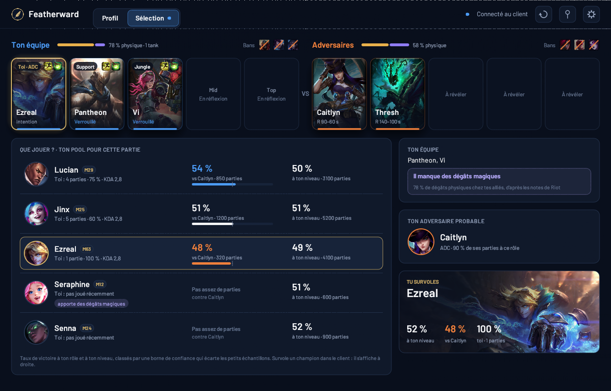

En sélection, avant de lock
Tant que tu n'as pas lock, tu vois tes champions classés pour cette game : leur winrate contre ton adversaire probable, leur winrate à ton elo, et ce qu'ils apportent quand ton équipe manque de dégâts magiques ou de frontline.
En haut, les deux équipes avec leurs rôles et le cooldown des ults adverses.
